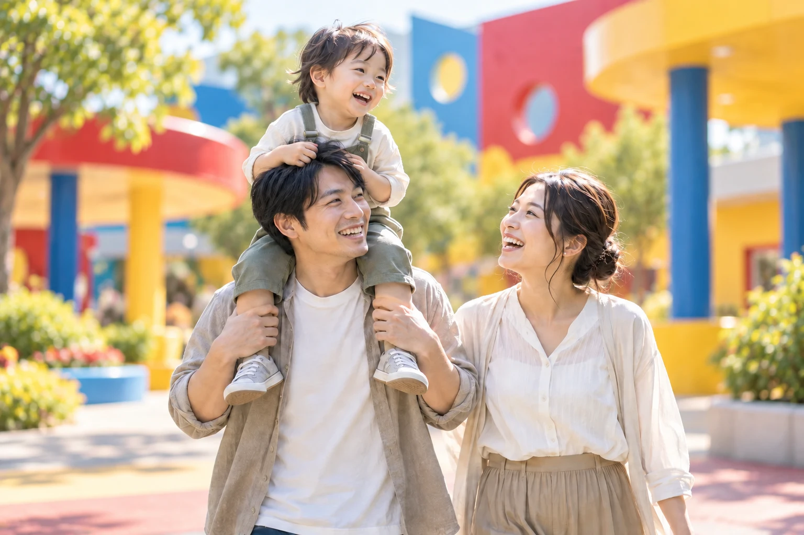
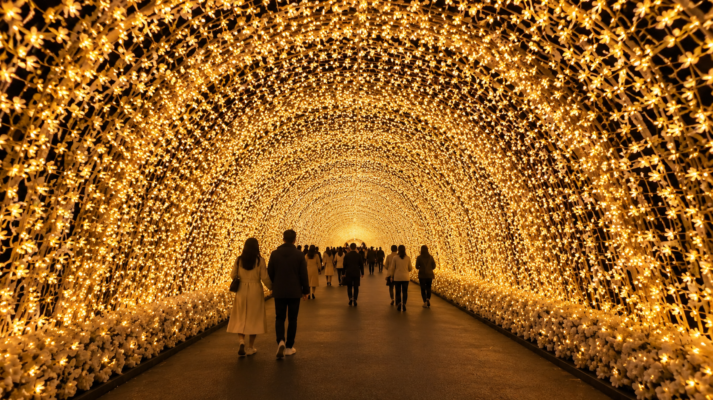
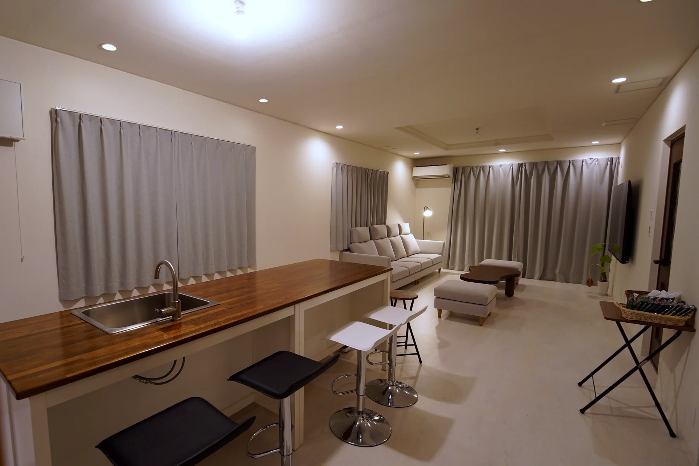
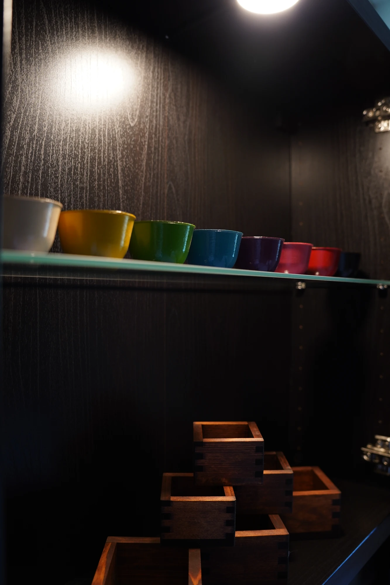
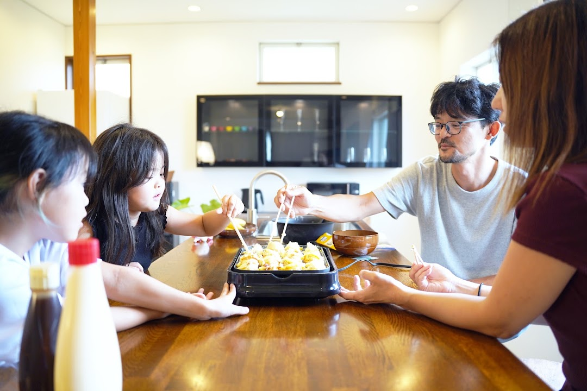
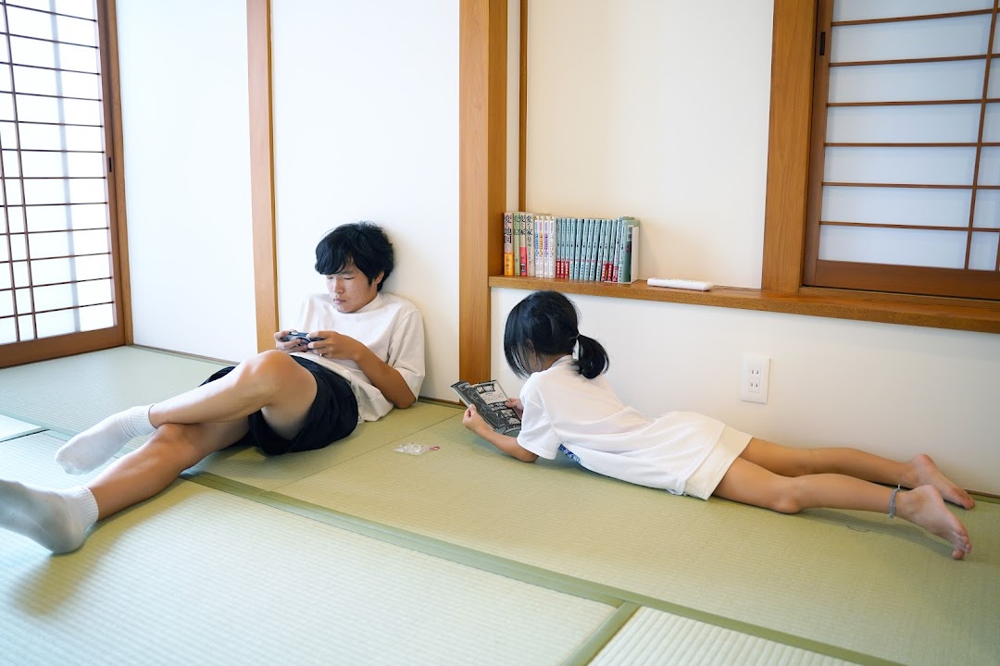

TWO JOYS, ONE STAY
遊ぶ時間も、くつろぐ時間も。
楽しかった一日には、
心地よい続きがある。
笑って、はしゃいで、思いきり遊ぶ。
帰ってからは、靴をぬいで、ソファに腰かけて。
「あれ、楽しかったね」と、今日の続きを話そう。
家族も、仲間も、ひとつ屋根の下。
Nagashima Villa 11は、最大11名で過ごせる一棟貸しの宿です。
01 / PLAY
今日は、とことん
遊ぼう。
遊園地も、ショッピングも。
行きたい場所が、すぐそばに。

こどもミュージアム＆パーク
観光エリアの写真はイメージです。
わくわくのすぐそばに、
泊まる。
一日たっぷり楽しんだら、長い帰り道のかわりに、近くのヴィラへ。旅の楽しみを、明日にもつなげられます。
所要時間は目安です。道路状況により変動します。花火や夜間営業の開催日は各施設の公式情報をご確認ください。

TWO SIDES OF WONDER
光の中を、
ゆっくり歩く夜も。
きらめくトンネルを、肩を並べて。
心に残る景色を、みんなの思い出に。
なばなの里で過ごす昼と夜をイメージしています。
02 / UNWIND
おかえり。
ここからは、ゆっくり。
気をつかわずに、気の合う人と。
一棟貸しだからできる、思い思いの時間。
GATHER & RELAX
旅の余韻を、
みんなで囲む。
約22畳のLDKで、ソファに身をあずけたり、大画面テレビで映画を楽しんだり。カウンターに好きな飲み物を並べれば、自然と会話がはじまります。
集まる楽しさも、何もしない贅沢も。
今夜は、いつもの自分でくつろいで。
A TOUCH OF URUSHI
木と漆の、
やさしい手ざわり。
キッチンの柱、アイランドカウンター、洗面の天板。人がふれる場所に、日本の伝統素材「漆」を取り入れました。木目を活かした深みのある艶が、くつろぐ時間にそっと寄り添います。


URUSHI SAKEWARE
好きな器で、
くつろぎの一杯を。
色漆のおちょこと、摺り漆の升をご用意しています。
滞在中、ご自由にお使いいただけます。
好きな器を選んで、木と漆の手ざわりを楽しみながら、ゆったりとしたひとときを。


ROOM TOUR
一緒に過ごす。
それぞれに、くつろぐ。
ベッドルームと、畳のある和室。
家族や仲間のリズムに合わせて、心地よく。
室内写真は、すべて実際の施設の写真です。
FACILITY & AMENITY
身軽に来て、
心地よく過ごす。
- 無料Wi-Fi
- 大画面テレビ
- 洗濯乾燥機
- エアコン
- 食器・グラス
- スマートロック
キッチン設備について
冷蔵庫・電子レンジ・電気ケトル・ホットプレート・食器・カトラリーをご用意しています。据え付けのIH・ガスコンロはありません。
タオル・アメニティについて
宿泊人数分のバスタオル・フェイスタオルのほか、シャンプー・コンディショナー・ボディソープ・歯ブラシ・ドライヤーなどをご用意しています。
ご滞在にあたって
住宅街にある宿です。夜間・早朝は静かにお過ごしください。パーティー、大音量での音楽はご遠慮ください。施設内・敷地内は全面禁煙で、ペットとの宿泊はできません。その他の条件は、ご予約前に予約ページとご利用ガイドでご確認ください。
ACCESS
遊びのすぐそばに、
帰れる場所を。
外観と地図を目印に、ヴィラへ。
ご到着までの道のりをご案内します。
NAGASHIMA VILLA 11
ナガシマヴィラ11
- 住所
- 〒511-1137
三重県桑名市長島町福吉947-8 - お車で
- 伊勢湾岸自動車道
「湾岸長島IC」から車で約7分 - 電車で
- 「近鉄長島駅」から車で約10分
- 駐車場
- 敷地内に無料駐車場・1台分
2台以上の場合は近隣駐車場をご利用ください。 - 周辺観光
- ナガシマスパーランド
ジャズドリーム長島
なばなの里
各施設まで車で約5分 - チェックイン
- スマートロックで
セルフチェックイン
所要時間は目安です。道路・交通状況により変動します。
YOUR NEXT NAGASHIMA STAY
次の休日は、
みんなでナガシマへ。
泊まりたい日と人数を選んで、
空室状況と最新料金をご確認ください。
空室確認後、受付可能な場合はStripeのお支払いURLをメールでお送りします。
お支払い完了をもって予約確定となります。
予約フォームは日本語・英語でご利用いただけます。